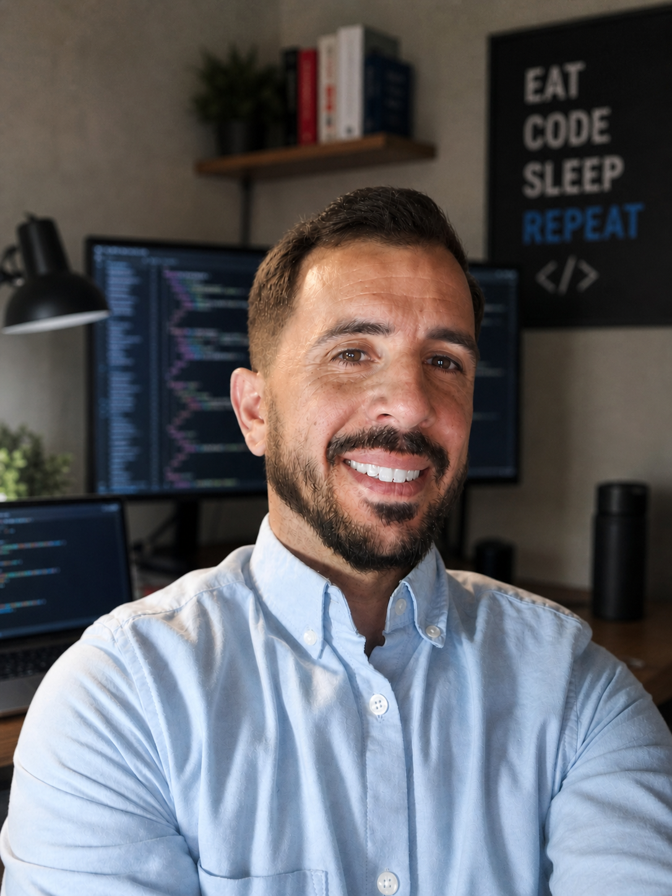

Perfil profesional

Hola, soy Carlos. Me estoy especializando en el desarrollo de aplicaciones móviles, backend y soluciones web. Me gusta crear proyectos completos, desde la interfaz hasta la conexión con la base de datos.
Mi enfoque se basa en entender el problema, diseñar una solución clara y construir aplicaciones funcionales, mantenibles y con una presentación profesional.